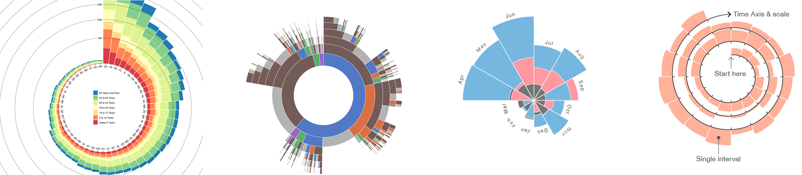
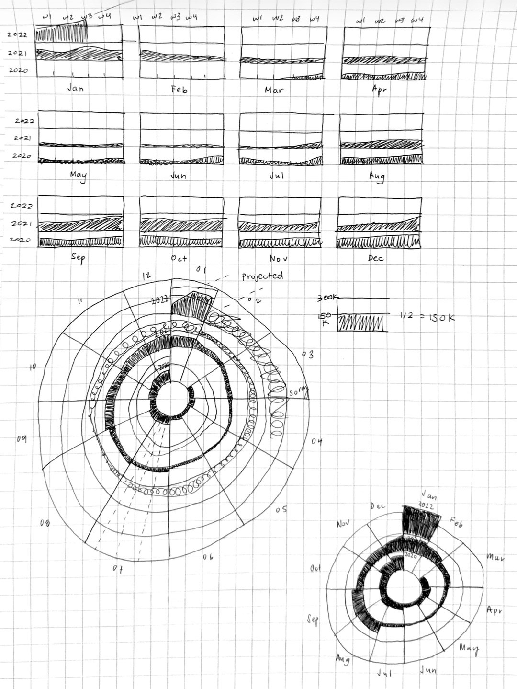
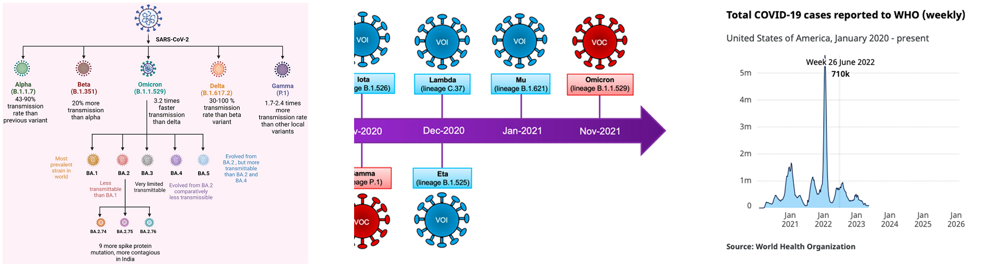
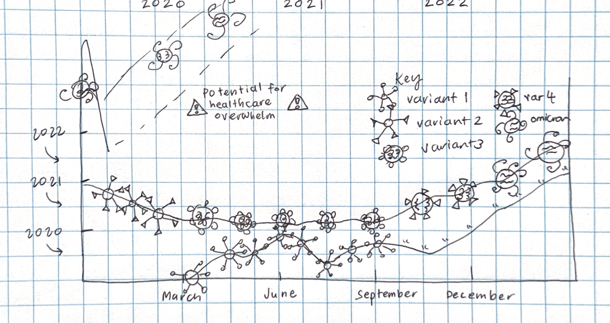
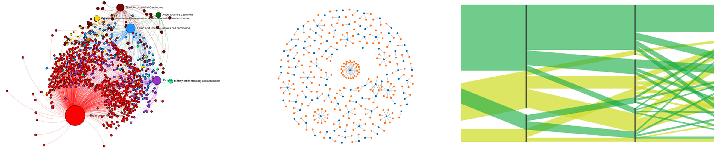
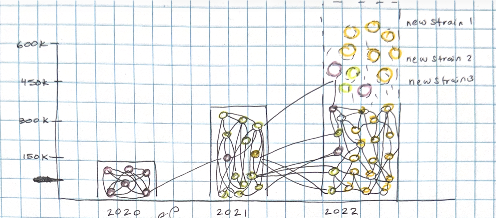
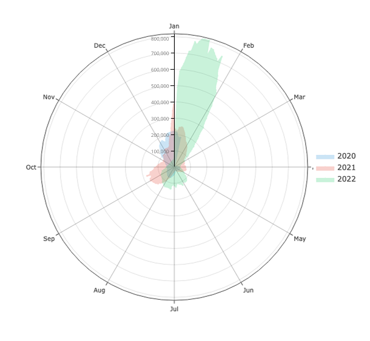

A3: Visualization Critique and Redesign
Kendall Nakai - knakai@mit.edu
Insights about the data/visualization
I have to admit, the questions I started out with weren’t possible to answer because the data available wouldn’t help answer them. I started out with the following questions:
- On my screen, 150k cases is about the width of my index finger, so anything thinner is less and thicker is more
- There are 12 slices of the figure, each representing a month so the sprial’s location tells me which month I’m in, also denoted by Jan at 12:00, April at 3:00, July at 6:00, and Oct at 9:00
- The beginning of the year is where 12:00 would be on a clock, which is where each of the years start
- According to the “helper text”, anywhere given on the line is the “7-day average”
- On the scale of the entire visualization, there are slight peaks and troughs until about November 2020, where cases begin to peak heavily until about mid-February 2021, where it recedes but is still larger than 2020 until mid-May 2021, which to my knowledge was when most of the immunocompromised people had been able to get their first vaccines by. The trend then goes to appearedly less cases than 2020 before piking again at the beginning of August 2021, rising, then falling a small amount by October 2021, then remaining steady until mid-December 2021 where it then begins peaking into exponential territory and that’s where the data ends
- The article confirms trends seen in the chart seems to be routine or “the norm” but that this “wave” is different than the other “spikes”. However, it also specifies that while the Omicron variant is more contagious, it’s less severe. The next data visualization shows the projections as a surge and discussing how hospitalizations and deaths are uncertain due to to more variants emerging “For example, if twice as many people become infected but these people are half as likely to be hospitalized, the demand for hospital beds would be the same.”
- The article has implications of daily life impact for workers, but also has hope in vaccinations
- The article discusses uncertainty about projection, which might be why Dr. Shaman made two separate visualizations
- There is also discussion on large cities like New York spiking earlier and others following later
Design critique
Dr. Shaman’s team’s visualization in the New York Times article on Covid-19 cases and the spiking Omicron variant is eye-catching, unusual, and therefore standout in terms of Covid-19 “classic” visualizations (i.e. flattening the curve) like a line graph/area chart. The most important trends of the underlying data is well-represented and easy to identify for the intended audience, a general news viewer like myself since I can easily compare that the spikes are around the beginning of 2021 in area, but the current one in 2022 is growing even larger, which based on the article is crisply the intended message of “When to expect Omicron to peak” which is Jan 2022. Since the visualization follows the idea of “time”, going 2020 spiraling into 2021, then 2022, a reader is quickly able to pick up on that time goes clockwise, and since there are 12 hours represented on a clock, I can see there are 12 months represented on this visualization. In my opinion, the main highlighted messages of a visualization should be an explanatory experience, and I think this visualization does that.
However, reading the nuances of the visualization is tricky and I wouldn’t rely on it for any more than the main message of a spiral timeline, as the exploratory experience waxes, then quickly wanes. For instance, the area of 150k cases is shown but since it’s on an area scale, it’s difficult for the reader to correctly interpret what the scale of cases is beyond that since area takes on such a non-linear proportion and its initial presentation as a triangle make it impossible to even correctly guesstimate how many cares there are in a given part of the visualization. If there’s some delineation of proportion on a scale, since there’s the triangular/pie/clock-like structure, there could also be some more obvious conceptualization of number of cases. Additionally, since the years are expanding on an uneven spiral, getting larger and larger, the time expansion is also confusing. The label of “7-day average” doesn’t tell me anything because I don’t know what proportion of time it’s referring to since 2020 is smaller in circumference than 2021 and 2022. In this case, the design could be improved by being more consistent in spiral or if not that utilize all the extra space created. The visualization is representative of a message of Covid-19 peaking but the article’s main purpose is actually discussing the Omicron variant in comparison to the previous variants so it could use the empty space of both unclear number of cases and unclear time to communicate something about variants. While I believe it could be in the design to obfuscate these to make the main point clearer, I think the other graphic in the article on projected cases could be communicated in the same spiral fashion, giving a more detailed graphic of Omicron’s impact.
Visualization Sketches
Design rationale for Sketch 1
Explaination
Some inspiration:


Design rationale for Sketch 2
Some inspiration:


Explaination
Design rationale for Sketch 3
Some inspiration:


Explaination
Final Visualization Design

Explaination
Final Writeup
DESCRIBE YOUR RATIONALE TO JUSTIFY THE DECISIONS FOR YOUR FINAL DESIGN. WHAT ARE YOU TRYING TO CONVEY, AND HOW DOES YOUR DESIGN FACILITATE THIS?
REFLECT ON HOW YOUR FINAL DESIGN DOES OR DOES NOT ADDRESS YOUR ORIGINAL CRITIQUE. WHAT TENSIONS OR TRADEOFFS DID YOU ENCOUNTER? WHAT DID NOT WORK OUT AS ANTICIPATED?